A driving route down the Tamil coast and across to Kerala. Mahabalipuram's shore temples, French Pondicherry, the great Chola temples of Thanjavur, Madurai's Meenakshi temple, the island temple of Rameswaram, sunrise at Kanyakumari and a finale in Trivandrum. This itinerary is built from our nights-per-place outline; the day plans, timings and changes are ours. We added Madurai's Meenakshi temple on the way from Thanjavur to Rameswaram; the outline did not include it, but the drive passes the city.
See it for yourself
Photos from the journey
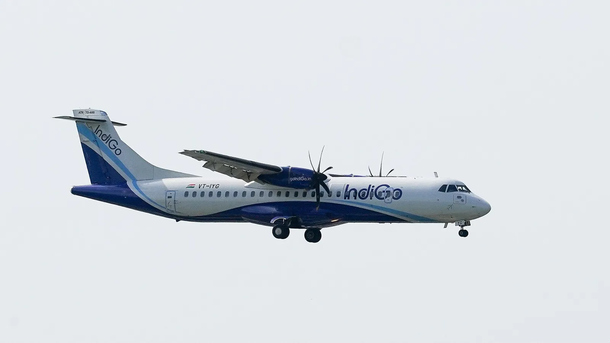
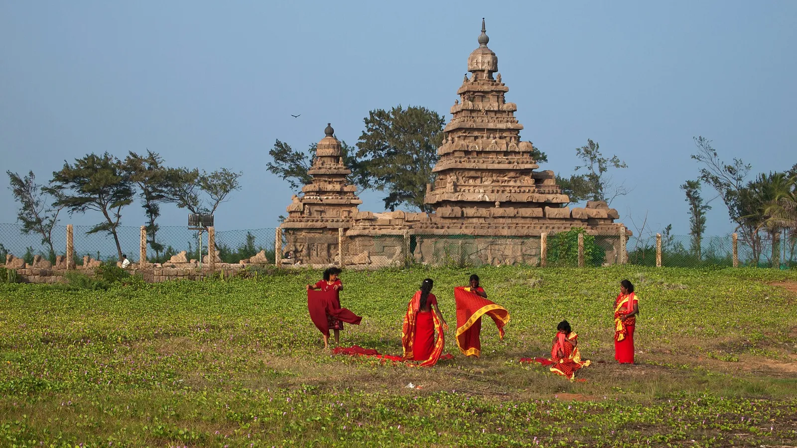
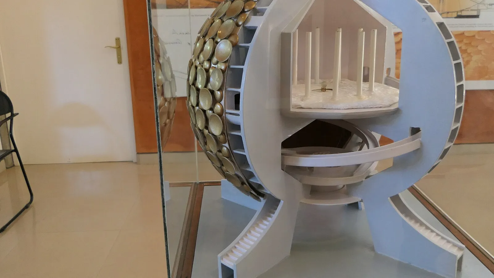
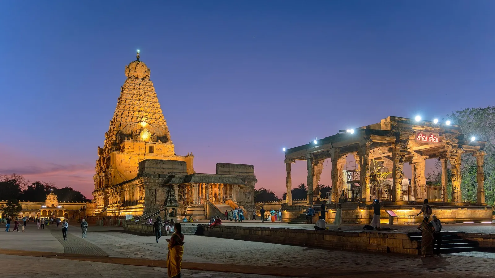
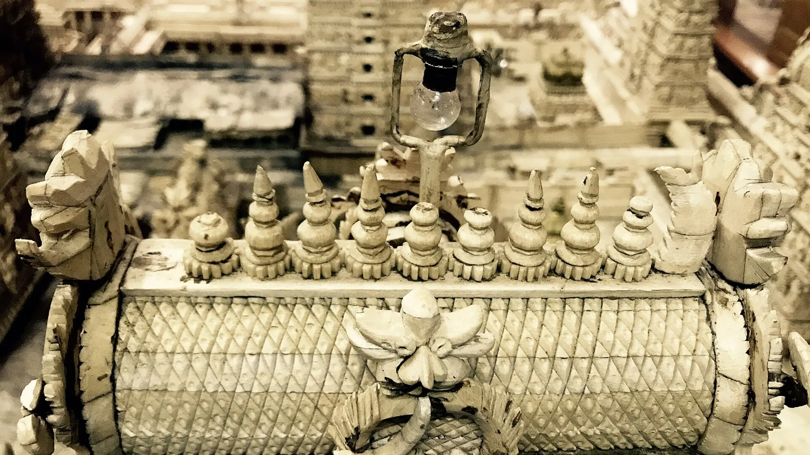
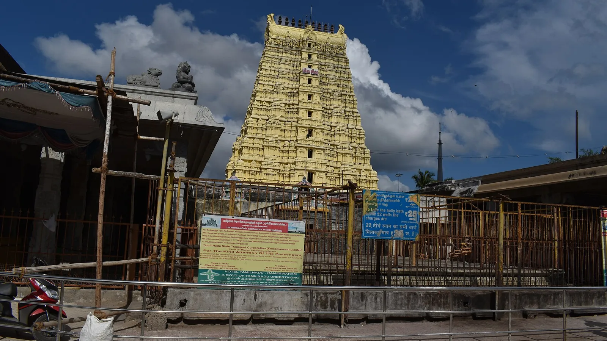
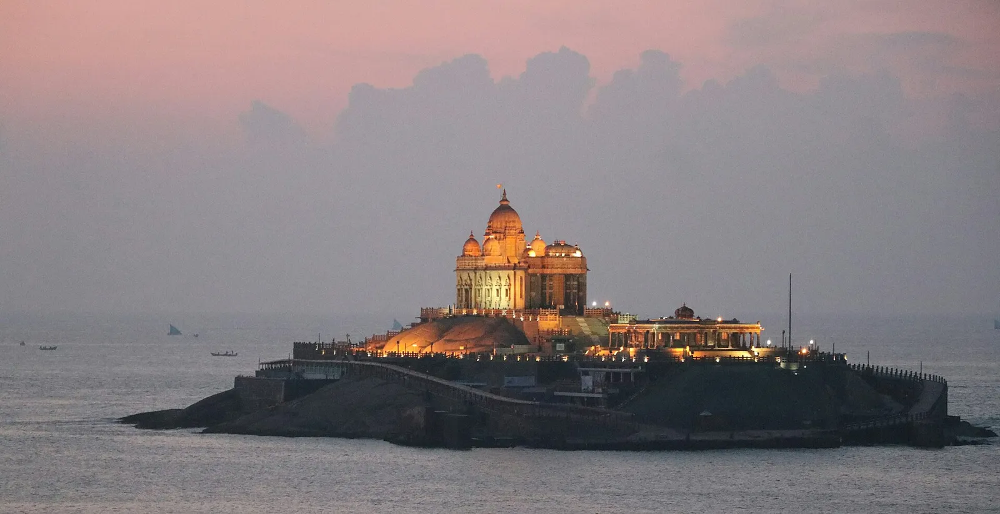
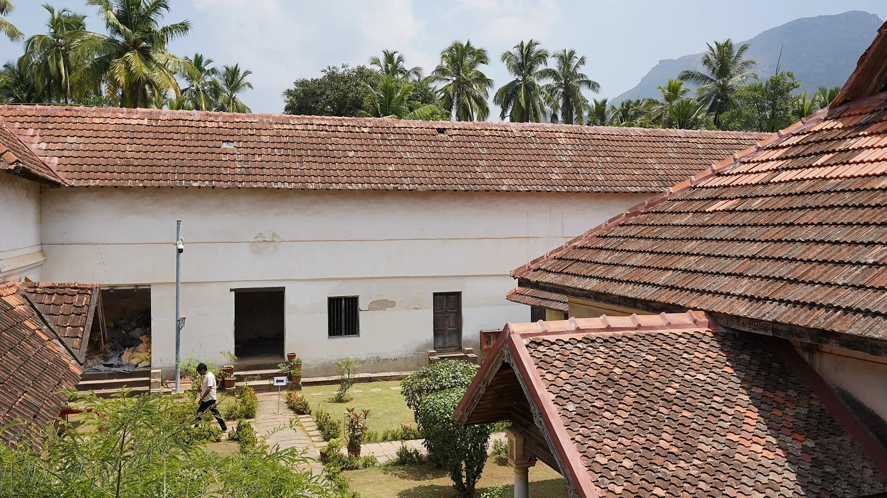
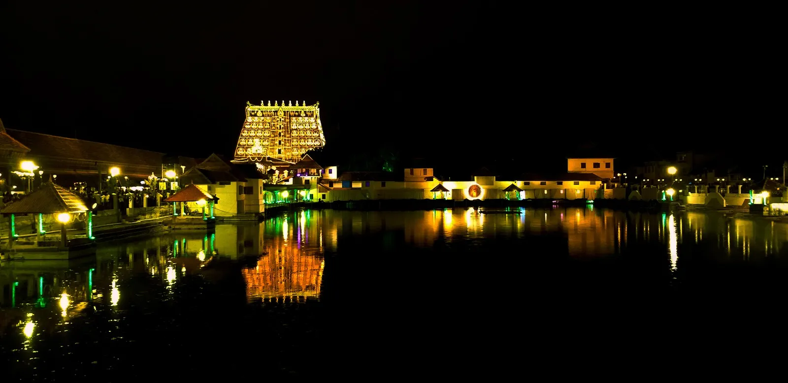
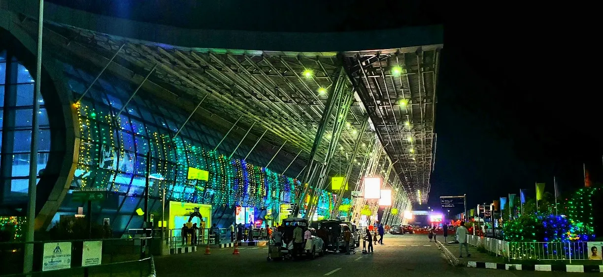
Where you go
The journey on one map
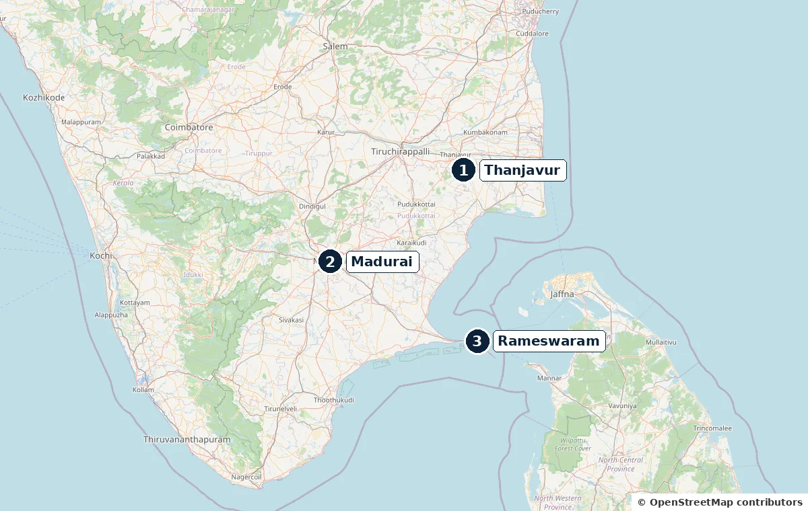
ChennaiMahabalipuramPondicherryThanjavurMaduraiRameswaramKanyakumariThiruvananthapuram
Day by day, in short
Daily travel brief
Distances are by road for the whole day. The full plan with timings comes with your detailed itinerary.
-
1
Arrive in Chennai
- Try a South Indian filter coffee and dosa tonight.
-
2
Mahabalipuram's shore temples to Pondicherry
- Go before 10:00 to avoid the heat.
- Pondicherry's cafés serve good vegetarian French-Tamil food.
-
3
Auroville, then to Thanjavur
- Matrimandir inner visits must be booked in person a day or more ahead.
- Thanjavur's temple is lit beautifully after dark.
-
4
The great Chola temples
- Brihadeeswarar temple: remove shoes; dress modestly.
- Buy Thanjavur paintings and bronze from government emporiums.
-
5
Madurai's Meenakshi temple, then to Rameswaram
- Meenakshi Amman temple: phones are not allowed inside; deposit them at the gate.
- A long day.
-
6
Rameswaram's corridors and Dhanushkodi, then Kanyakumari
- Ramanathaswamy temple: dhoti or saree preferred; expect to get wet at the wells.
- Leave Dhanushkodi by noon: the drive is long.
-
7
Sunrise at the tip of India
- Vivekananda Rock Memorial by ferry: ferries run about 08:00 to 16:00 and stop in rough seas.
- Kanyakumari is one of the few places in India to see sunrise and sunset over the sea.
-
8
Padmanabhapuram Palace to Trivandrum
- Padmanabhapuram Palace: closed on Mondays.
- Kovalam beach is 15 km from the city if you prefer the sea.
-
9
Trivandrum's temple and museums
- Sree Padmanabhaswamy temple: hindus only.
- Evening at Kovalam's lighthouse beach.
-
10
Fly home from Trivandrum
- Transfer to the airport: leave 4 hours before an international flight and 3 before a domestic one.
- Pack liquids and souvenirs in checked baggage.
Local know-how
Travel hacks from our desk
UPI, cards and cash
UPI works almost everywhere, even at small stalls. Keep some cash in INR 100 and 200 notes for temples, parking, tips and places where the network is weak.
Temple and shrine etiquette
Cover shoulders and knees. Remove shoes where asked, and carry socks for hot stone floors. Leather belts and bags are not allowed inside some Jain and Hindu temples. Ask before photographing people and inside shrines.
Water and street food
Drink sealed bottled or filtered water only. Choose busy stalls where food is cooked in front of you, and skip cut fruit and ice from roadside stalls.
Driving times
Indian roads are slower than the kilometres suggest: plan on 40 to 50 km an hour on highways and much less in hills and towns. Your driver's breaks and meal stops are built into the timings.
Plugs and tipping
Plugs are Indian three-pin and two-pin, 230 volts. Tipping drivers and guides about INR 300 to 500 a day is appreciated.
When to go
Best time to visit for this journey
January to March: dry after the north-east monsoon and not yet hot.
October to March, when the coast is less humid. The north-east monsoon brings rain to Tamil Nadu from October to December.
The package
What's included
Included
- Hotels as listed with breakfast
- Private air-conditioned car with driver for all transfers and sightseeing
- 24/7 support from Blue Diamond Voyage
Not included
- Flights and trains not listed as included
- Entry fees, guides, boats and activities
- Lunches and dinners unless stated
- Travel insurance
The detailed itinerary
Some journeys are planned. Ours are crafted.
The full 10-day plan is ready: hour-by-hour timings, drive times, temple dress codes, food for your diet and a route map for every day. Tell us your dates and your city, and we'll send it to you on WhatsApp, shaped around you.
- Hour-by-hour timings
- A route map for every day
- Hotel and room details
- Visa and entry steps
- Vegetarian and Jain dining
24/7 travel desk+91 97148 59797+91 98242 21400
Photo and map credits
- Chennai International Airport: This Photo was taken by Timothy A. Gonsalves. Feel free to use my photos, but pl, CC BY-SA 4.0, via Wikimedia Commons
- Shore Temple Mahabalipuram: Vyacheslav Argenberg, CC BY 4.0, via Wikimedia Commons
- Auroville Visitors Centre: Dinesh Valke from Thane, India, CC BY-SA 2.0, via Wikimedia Commons
- Brihadeeswarar Temple: Original: Rainer Halama Derivative work: UnpetitproleX, CC BY-SA 4.0, via Wikimedia Commons
- Meenakshi Amman Temple: IM3847, CC BY-SA 4.0, via Wikimedia Commons
- Ramanathaswamy Temple: Wanderlusts, CC BY-SA 4.0, via Wikimedia Commons
- Vivekananda Rock Memorial: Shivani, CC BY-SA 4.0, via Wikimedia Commons
- Padmanabhapuram Palace: This Photo was taken by Timothy A. Gonsalves. Feel free to use my photos, but pl, CC BY-SA 4.0, via Wikimedia Commons
- Sree Padmanabhaswamy Temple: Arun RJ, CC BY-SA 4.0, via Wikimedia Commons
- Trivandrum International Airport: Votv007, CC BY-SA 4.0, via Wikimedia Commons
- Maps: © OpenStreetMap contributors; road routes by OSRM.